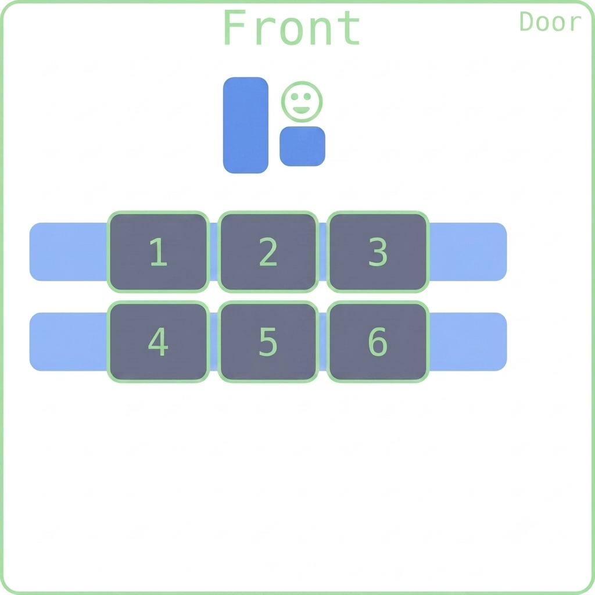

Functions Classes
Fred Agbo
October 30, 2026
Happy Wednesday!
- Class grouping today: Scan the QR code or go to https://tools.jedrembold.prof/daily
- Class code is
FiB4R - Introduce yourselves! What is your best Python function?

Quick Announcements
- Project ImageShop is ongoing and due next week
Monday
- I encourage you NOT to wait until the late hour to start the projects or ask for extension
- Because by Monday, the 4th project will be published, and its always a bit demanding than the previous one.
- Second midterm exam is next week Friday 6th of
November.
- More details next week
- Remember that class attendance is graded as part of the
Participation grade component of this class
- Several unexcused absenses from the class or session meeting will
impact your grade significantly.
So, PLEASE, show up!!!
- Several unexcused absenses from the class or session meeting will
impact your grade significantly.
Getters and Setters
In the object-oriented model, the client is not supposed to muck-about with the object internals
The implementation should therefore provide methods to retrieve desired attributes (called getters) or to make changes to desired attributes (called setters)
Setting up getters and setters for the attribute
salarymight look like:def get_salary(self): return self.salary def set_salary(self, new_salary): self.salary = new_salaryGetters are far more common than setters, as you don’t always want the client to have the freedom to change attributes on a whim
Representation
Printing out an object that you just created as an instance of a custom class will look ugly:
>>> C = Employee('Bob', 'clerk', 15) >>> print(C) <__main__.Employee object at 0x7f942ba13550>You can define special methods for a class that specify how your object should be converted to a string (or anything else really)
- All these special methods have double underscores before and after, and hence are frequently termed “dunder” (double underscore) methods
- You can use the
__str__or__repr__method to specify how your object might be printed
A Good Employee
class Employee:
def __init__(self, name, title, salary):
self.name = name
self.title = title
self.salary = salary
def __str__(self):
return f"{self.name} ({self.title}): {self.salary}"
def get_salary(self):
return self.salary
def set_salary(self, new_salary):
self.salary = new_salaryDaily LO’s
- Practice defining instance methods
- Use
selfproperly within our method definitions - Write some getters and setters
- Print out our custom objects in a useful way
Problem 1: Demo Tracing
What would be the output of the last print statement in the code to the right?
- True
- False
- Error: Index out of range
- Error: Python will not know how to compare the new Demo objects
class Demo:
def __init__(self):
self.x = []
def add(self, v):
self.x.append(v)
def get_x(self):
return self.x
A, B = Demo(), Demo()
C = B.get_x()
A.add(3)
B.add(3)
C.append(A)
print(A.get_x() == B.get_x())Problem 2
What would be the output of the printed statement in the code to the right?
- Loly black 2
- Loly brown 4
- Loly, black, 4
- Loly, brown, 2
class Pet:
def __init__(self, name, color, age):
self.name = name
self.color="black"
self.age = age
def bmi(self, weight, height):
if weight/height > 2:
self.age = self.age*2
else:
self.age += 1
dog = Pet("Loly", "brown", 2)
dog.bmi(180,45)
print(f'{dog.name}, {dog.color}, {dog.age}')
Activity 3A: Banking Transaction
- Create a
BankAccountclass with the following requirements:- Private attributes:
_account_number,_balance,_owner_name - Constructor to initialize these attributes
- Getter and setter methods for all attributes
- Private attributes:
Activity 3B: Banking Transaction
- Implement the normal transactions but with security check to be sure
the transaction is valid!
- Method to deposit money
- Method to withdraw money
- Method to display account information
Activity 3C: Banking Transaction
- Display the account information and with some valid transactions:
the formatting string will be your friend here!
- Implement a method to display account information